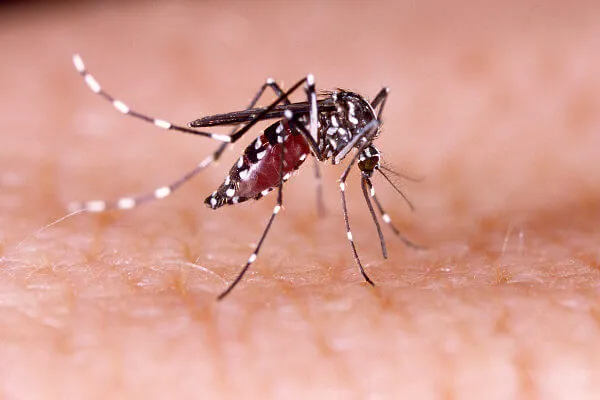

|  |
A dengue é uma doença viral transmitida por mosquitos que nos últimos anos.se espalhou
rapidamente por todas as regiões da Organização Mundial da Saúde (OMS). O vírus da
dengue é transmitido por mosquitos fêmea, principalmente da espécie Aedes aegypti e,
em menor proporção, da espécie Aedes albopictus.
Os principais sintomas da dengue são: Febre alta > 38.5ºC; Dores musculares intensas; Dor ao movimentar os olhos; Mal estar; Falta de apetite; Dor de cabeça; Manchas vermelhas no corpo.
|